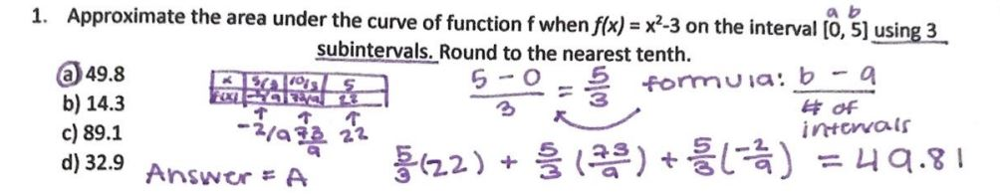
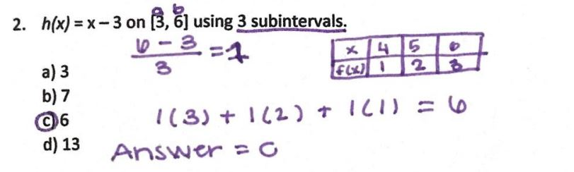
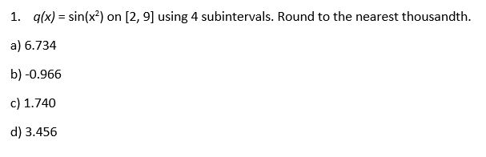
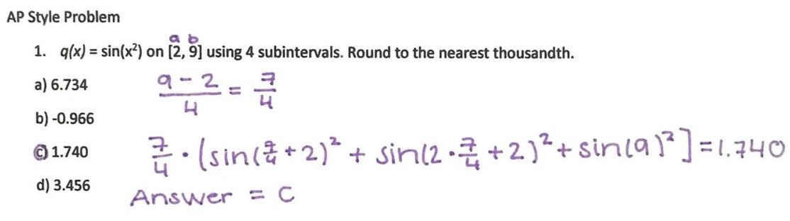
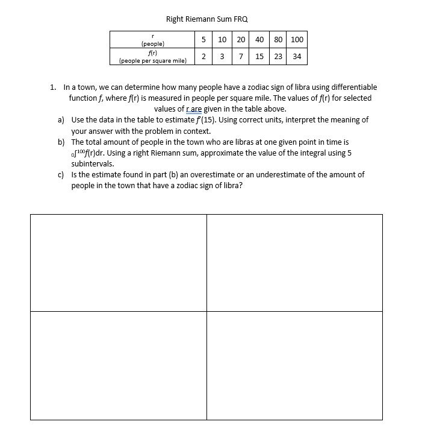
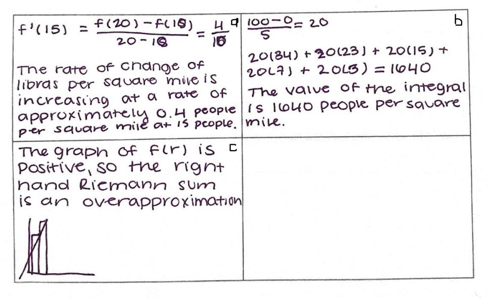

| Limits with Algebraic Manipulation | Chain Rule | Extreme Value Theorem | Right Riemann Sums | Antiderivatives | Volumes of solids (Washer Method) | Back to Home Page |
Made by: Kara Ho and Akshita Ramesh, AP Calculus Block 5, Mrs. Burns' Class
Welcome to your fourth mission: Riemann Sums! Here's a brief overview of what you'll need to do to complete your mission:
Riemann sums are a great way of approximating the value of an integral, or the area under a curve. With Riemann sums, we basically get an estimate of the value of that area using rectangles. There are multiple types of Riemann sums, from Right, to left, to Midpoint, to Trapezoidal. Today, we’ll be focusing on Right hand Riemann Sums.
Right hand Riemann sums start on the right-hand, and then go towards the left. Depending on if f(x) is increasing or decreasing, Right hand Riemann sums are either an over approximation or an underapproximation.1. 1. Approximate the area under the curve of function f when f(x) = x2-3 on the interval [0, 5] using 3 subintervals. Round to the nearest tenth.
2. Solve for h(x) = x – 3 on [3, 6] using 3 subintervals.
To see how the questions are solved, see the procedures below!
|  |  |
Lets try a multiple choice question on your own this time. You've got this! You can check your answer by clicking on the picture to the right.
|  |  |
Now lets try a free-response question! To check your answers, click the picture on the right
|  |  |